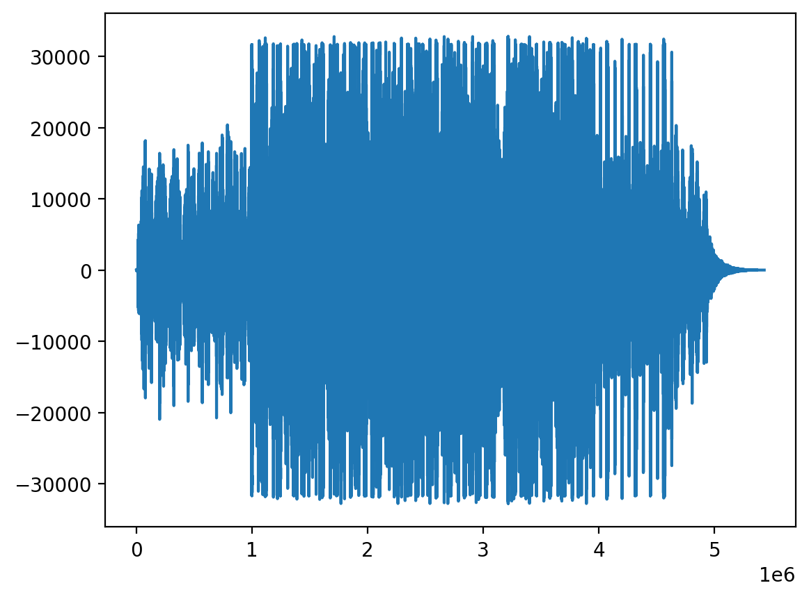

import matplotlib.pyplot as plt
import numpy as np
import torch
import torch.nn as nn
import pandas as pd
# Retina mode
%matplotlib inline
%config InlineBackend.figure_format = 'retina'PDF of some common continuous random variables and applications
ML
PDF of Normal Distribution
Let \(X\) be a random variable that follows a normal distribution with mean \(\mu\) and variance \(\sigma^2\). The probability density function (PDF) of \(X\) is given by:
\[ f_X(x) = \frac{1}{\sqrt{2\pi\sigma^2}} \exp\left(-\frac{(x-\mu)^2}{2\sigma^2}\right). \]
Let \(X \sim \mathcal{N}(\mu, \sigma^2)\) denote that \(X\) is drawn from a normal distribution with mean \(\mu\) and variance \(\sigma^2\).
dist = torch.distributions.Normal(0, 1)dist.supportReal()dist.meantensor(0.)dist.variancetensor(1.)dist.modetensor(0.)## Plotting the PDF
def plot_pdf_normal(mu, sigma):
dist = torch.distributions.Normal(mu, sigma)
x = torch.linspace(-10, 10, 1000)
y = dist.log_prob(x).exp()
plt.plot(x, y)
plt.title(f"PDF N({mu}, {sigma})")plot_pdf_normal(0, 1)
plot_pdf_normal(0, 2)
# Simulating data with normal distributed noise
x_true = torch.linspace(-5, 5, 1000)
y_true = 2 * x_true + 1
eps = torch.distributions.Normal(0, 1).sample(y_true.shape)
y_obs = y_true + eps
plt.scatter(x_true, y_obs,
label="Observed data",
marker='o', s=2,
alpha = 0.5, color='red')
plt.plot(x_true, y_true, label="True data")
plt.legend()
Heights and weights data
The dataset contains 25,000 rows and 3 columns. Each row represents a person and the columns represent the person’s index, height, and weight.
df = pd.read_html("http://socr.ucla.edu/docs/resources/SOCR_Data/SOCR_Data_Dinov_020108_HeightsWeights.html")store_df = df[0]
store_df.columns = store_df.iloc[0]
store_df = store_df.iloc[1:]
store_df = store_df.astype(float)
store_df = store_df.drop(columns=["Index"])
store_df = store_df.dropna()store_df.head()| Height(Inches) | Weight(Pounds) | |
|---|---|---|
| 1 | 65.78331 | 112.9925 |
| 2 | 71.51521 | 136.4873 |
| 3 | 69.39874 | 153.0269 |
| 4 | 68.21660 | 142.3354 |
| 5 | 67.78781 | 144.2971 |
store_df["Height(Inches)"].plot(kind='density')
# Fit a normal distribution to the data
mu = store_df["Height(Inches)"].mean().item()
sigma = store_df["Height(Inches)"].std().item()
dist = torch.distributions.Normal(mu, sigma)
x = torch.linspace(50, 80, 1000)
y = dist.log_prob(x).exp()
plt.plot(x, y, label="Fitted PDF")
store_df["Height(Inches)"].plot(kind='density', label="KDE")
plt.legend()
store_df["Weight(Pounds)"].plot(kind='density')
Log Normal Distribution
Let \(Y \sim \mathcal{N}(\mu, \sigma^2)\) be a normally distributed random variable.
Let us define a new random variable \(X = \exp(Y)\).
We can say that log of \(X\) is normally distributed, i.e., \(\log(X) \sim \mathcal{N}(\mu, \sigma^2)\).
We can also say that \(X\) is log-normally distributed.
The probability density function (PDF) of \(X\) is given by:
\[ f_X(x) = \frac{1}{x\sqrt{2\pi\sigma^2}} \exp\left(-\frac{(\log(x)-\mu)^2}{2\sigma^2}\right). \]
We can derive the PDF of \(X\) using the change of variables formula. (will be covered later in the course)
mu = 1.0
sigma = 1.0
log_normal = torch.distributions.LogNormal(mu, sigma)log_normal.supportGreaterThan(lower_bound=0.0)log_normal.meantensor(4.4817)log_normal.modetensor(1.)log_normal.variancetensor(34.5126)
x = torch.linspace(-10, 10, 1000)
x_non_neg_mask = x > 0.001
y = torch.zeros_like(x)
y[x_non_neg_mask] = log_normal.log_prob(x[x_non_neg_mask]).exp()
plt.plot(x, y, label="PDF LogNormal(1, 1)")
normal = torch.distributions.Normal(mu, sigma)
plt.plot(x, normal.log_prob(x).exp(), label="PDF Normal(1, 1)")
plt.legend()

Applications
See: https://en.wikipedia.org/wiki/Log-normal_distribution
See https://chess.stackexchange.com/questions/2506/what-is-the-average-length-of-a-game-of-chess/4899#4899
import kagglehub
# Download latest version
path = kagglehub.dataset_download("datasnaek/chess")
print("Path to dataset files:", path)Downloading from https://www.kaggle.com/api/v1/datasets/download/datasnaek/chess?dataset_version_number=1...100%|██████████| 2.77M/2.77M [00:01<00:00, 1.47MB/s]Extracting files...Path to dataset files: /Users/nipun/.cache/kagglehub/datasets/datasnaek/chess/versions/1import os
df = pd.read_csv(os.path.join(path, "games.csv"))df.head()| id | rated | created_at | last_move_at | turns | victory_status | winner | increment_code | white_id | white_rating | black_id | black_rating | moves | opening_eco | opening_name | opening_ply | |
|---|---|---|---|---|---|---|---|---|---|---|---|---|---|---|---|---|
| 0 | TZJHLljE | False | 1.504210e+12 | 1.504210e+12 | 13 | outoftime | white | 15+2 | bourgris | 1500 | a-00 | 1191 | d4 d5 c4 c6 cxd5 e6 dxe6 fxe6 Nf3 Bb4+ Nc3 Ba5... | D10 | Slav Defense: Exchange Variation | 5 |
| 1 | l1NXvwaE | True | 1.504130e+12 | 1.504130e+12 | 16 | resign | black | 5+10 | a-00 | 1322 | skinnerua | 1261 | d4 Nc6 e4 e5 f4 f6 dxe5 fxe5 fxe5 Nxe5 Qd4 Nc6... | B00 | Nimzowitsch Defense: Kennedy Variation | 4 |
| 2 | mIICvQHh | True | 1.504130e+12 | 1.504130e+12 | 61 | mate | white | 5+10 | ischia | 1496 | a-00 | 1500 | e4 e5 d3 d6 Be3 c6 Be2 b5 Nd2 a5 a4 c5 axb5 Nc... | C20 | King's Pawn Game: Leonardis Variation | 3 |
| 3 | kWKvrqYL | True | 1.504110e+12 | 1.504110e+12 | 61 | mate | white | 20+0 | daniamurashov | 1439 | adivanov2009 | 1454 | d4 d5 Nf3 Bf5 Nc3 Nf6 Bf4 Ng4 e3 Nc6 Be2 Qd7 O... | D02 | Queen's Pawn Game: Zukertort Variation | 3 |
| 4 | 9tXo1AUZ | True | 1.504030e+12 | 1.504030e+12 | 95 | mate | white | 30+3 | nik221107 | 1523 | adivanov2009 | 1469 | e4 e5 Nf3 d6 d4 Nc6 d5 Nb4 a3 Na6 Nc3 Be7 b4 N... | C41 | Philidor Defense | 5 |
# Distribution of the number of turns in the games
df["turns"].plot(kind='hist', bins=50)
# Logarithm of the number of turns
df["turns"].apply(np.log1p).plot(kind='hist', bins=50)
# Log of turns seems to be normally distributedmu, sigma = df["turns"].apply(np.log1p).mean(), df["turns"].apply(np.log1p).std()
print(mu, sigma)3.9360063177486277 0.6822030192719669# Plot PDF of the fitted log-normal distribution
x = torch.linspace(0.001, 300, 1000)
with torch.no_grad():
log_normal = torch.distributions.LogNormal(mu, sigma)
y = log_normal.log_prob(x).exp()
plt.plot(x, y, label="Fitted PDF")
plt.hist(df["turns"], bins=50, density=True, alpha=0.5, label="KDE")
plt.legend()Gamma distribution
Let \(X\) be a random variable that follows a gamma distribution with shape parameter \(k\) and scale parameter \(\theta\). The probability density function (PDF) of \(X\) is given by:
\[ f_X(x) = \frac{1}{\Gamma(k)\theta^k} x^{k-1} \exp\left(-\frac{x}{\theta}\right). \]
where \(\Gamma(k)\) is the gamma function defined as:
\[ \Gamma(k) = \int_0^\infty x^{k-1} e^{-x} dx. \]
gamma_dist = torch.distributions.Gamma(2, 1)
x = torch.linspace(0.001, 10, 1000)
y = gamma_dist.log_prob(x).exp()
plt.plot(x, y, label="PDF Gamma(2, 1)")
# Fit a gamma distribution to the data
alpha, beta = torch.tensor([1.0], requires_grad=True), torch.tensor([1.0], requires_grad=True)
gamma_dist = torch.distributions.Gamma(alpha, beta)
optimizer = torch.optim.Adam([alpha, beta], lr=0.01)
x = torch.tensor(df["turns"].values, dtype=torch.float32)
for i in range(1000):
optimizer.zero_grad()
loss = -gamma_dist.log_prob(x).mean()
loss.backward()
optimizer.step()
print(alpha.item(), beta.item())2.315873384475708 0.03829348832368851learnt_gamma_dist = torch.distributions.Gamma(alpha.detach(), beta.detach())
x = torch.linspace(0.001, 300, 1000)
y = learnt_gamma_dist.log_prob(x).exp()
plt.plot(x, y, label="Fitted PDF")
plt.hist(df["turns"], bins=50, density=True, alpha=0.5, label="KDE")
plt.legend()
Uniform Distribution
Let \(X\) be a random variable that follows a uniform distribution on the interval \([a, b]\). The probability density function (PDF) of \(X\) is given by:
$$ f_X(x) = \[\begin{cases} \frac{1}{b-a} & \text{if } x \in [a, b], \\ 0 & \text{otherwise}. \end{cases}\]$$
We can say that \(X \sim \text{Uniform}(a, b)\).
a = 0.0
b = 2.0
dist = torch.distributions.Uniform(a, b)dist.supportInterval(lower_bound=0.0, upper_bound=2.0)dist.high, dist.low(tensor(2.), tensor(0.))dist.meantensor(1.)dist.variancetensor(0.3333)x_range = torch.linspace(-1, 3, 1000)
try:
y = dist.log_prob(x_range).exp()
except Exception as e:
print(e)Expected value argument (Tensor of shape (1000,)) to be within the support (Interval(lower_bound=0.0, upper_bound=2.0)) of the distribution Uniform(low: 0.0, high: 2.0), but found invalid values:
tensor([-1.0000e+00, -9.9600e-01, -9.9199e-01, -9.8799e-01, -9.8398e-01,
-9.7998e-01, -9.7598e-01, -9.7197e-01, -9.6797e-01, -9.6396e-01,
-9.5996e-01, -9.5596e-01, -9.5195e-01, -9.4795e-01, -9.4394e-01,
-9.3994e-01, -9.3594e-01, -9.3193e-01, -9.2793e-01, -9.2392e-01,
-9.1992e-01, -9.1592e-01, -9.1191e-01, -9.0791e-01, -9.0390e-01,
-8.9990e-01, -8.9590e-01, -8.9189e-01, -8.8789e-01, -8.8388e-01,
-8.7988e-01, -8.7588e-01, -8.7187e-01, -8.6787e-01, -8.6386e-01,
-8.5986e-01, -8.5586e-01, -8.5185e-01, -8.4785e-01, -8.4384e-01,
-8.3984e-01, -8.3584e-01, -8.3183e-01, -8.2783e-01, -8.2382e-01,
-8.1982e-01, -8.1582e-01, -8.1181e-01, -8.0781e-01, -8.0380e-01,
-7.9980e-01, -7.9580e-01, -7.9179e-01, -7.8779e-01, -7.8378e-01,
-7.7978e-01, -7.7578e-01, -7.7177e-01, -7.6777e-01, -7.6376e-01,
-7.5976e-01, -7.5576e-01, -7.5175e-01, -7.4775e-01, -7.4374e-01,
-7.3974e-01, -7.3574e-01, -7.3173e-01, -7.2773e-01, -7.2372e-01,
-7.1972e-01, -7.1572e-01, -7.1171e-01, -7.0771e-01, -7.0370e-01,
-6.9970e-01, -6.9570e-01, -6.9169e-01, -6.8769e-01, -6.8368e-01,
-6.7968e-01, -6.7568e-01, -6.7167e-01, -6.6767e-01, -6.6366e-01,
-6.5966e-01, -6.5566e-01, -6.5165e-01, -6.4765e-01, -6.4364e-01,
-6.3964e-01, -6.3564e-01, -6.3163e-01, -6.2763e-01, -6.2362e-01,
-6.1962e-01, -6.1562e-01, -6.1161e-01, -6.0761e-01, -6.0360e-01,
-5.9960e-01, -5.9560e-01, -5.9159e-01, -5.8759e-01, -5.8358e-01,
-5.7958e-01, -5.7558e-01, -5.7157e-01, -5.6757e-01, -5.6356e-01,
-5.5956e-01, -5.5556e-01, -5.5155e-01, -5.4755e-01, -5.4354e-01,
-5.3954e-01, -5.3554e-01, -5.3153e-01, -5.2753e-01, -5.2352e-01,
-5.1952e-01, -5.1552e-01, -5.1151e-01, -5.0751e-01, -5.0350e-01,
-4.9950e-01, -4.9550e-01, -4.9149e-01, -4.8749e-01, -4.8348e-01,
-4.7948e-01, -4.7548e-01, -4.7147e-01, -4.6747e-01, -4.6346e-01,
-4.5946e-01, -4.5546e-01, -4.5145e-01, -4.4745e-01, -4.4344e-01,
-4.3944e-01, -4.3544e-01, -4.3143e-01, -4.2743e-01, -4.2342e-01,
-4.1942e-01, -4.1542e-01, -4.1141e-01, -4.0741e-01, -4.0340e-01,
-3.9940e-01, -3.9540e-01, -3.9139e-01, -3.8739e-01, -3.8338e-01,
-3.7938e-01, -3.7538e-01, -3.7137e-01, -3.6737e-01, -3.6336e-01,
-3.5936e-01, -3.5536e-01, -3.5135e-01, -3.4735e-01, -3.4334e-01,
-3.3934e-01, -3.3534e-01, -3.3133e-01, -3.2733e-01, -3.2332e-01,
-3.1932e-01, -3.1532e-01, -3.1131e-01, -3.0731e-01, -3.0330e-01,
-2.9930e-01, -2.9530e-01, -2.9129e-01, -2.8729e-01, -2.8328e-01,
-2.7928e-01, -2.7528e-01, -2.7127e-01, -2.6727e-01, -2.6326e-01,
-2.5926e-01, -2.5526e-01, -2.5125e-01, -2.4725e-01, -2.4324e-01,
-2.3924e-01, -2.3524e-01, -2.3123e-01, -2.2723e-01, -2.2322e-01,
-2.1922e-01, -2.1522e-01, -2.1121e-01, -2.0721e-01, -2.0320e-01,
-1.9920e-01, -1.9520e-01, -1.9119e-01, -1.8719e-01, -1.8318e-01,
-1.7918e-01, -1.7518e-01, -1.7117e-01, -1.6717e-01, -1.6316e-01,
-1.5916e-01, -1.5516e-01, -1.5115e-01, -1.4715e-01, -1.4314e-01,
-1.3914e-01, -1.3514e-01, -1.3113e-01, -1.2713e-01, -1.2312e-01,
-1.1912e-01, -1.1512e-01, -1.1111e-01, -1.0711e-01, -1.0310e-01,
-9.9099e-02, -9.5095e-02, -9.1091e-02, -8.7087e-02, -8.3083e-02,
-7.9079e-02, -7.5075e-02, -7.1071e-02, -6.7067e-02, -6.3063e-02,
-5.9059e-02, -5.5055e-02, -5.1051e-02, -4.7047e-02, -4.3043e-02,
-3.9039e-02, -3.5035e-02, -3.1031e-02, -2.7027e-02, -2.3023e-02,
-1.9019e-02, -1.5015e-02, -1.1011e-02, -7.0070e-03, -3.0030e-03,
1.0010e-03, 5.0050e-03, 9.0090e-03, 1.3013e-02, 1.7017e-02,
2.1021e-02, 2.5025e-02, 2.9029e-02, 3.3033e-02, 3.7037e-02,
4.1041e-02, 4.5045e-02, 4.9049e-02, 5.3053e-02, 5.7057e-02,
6.1061e-02, 6.5065e-02, 6.9069e-02, 7.3073e-02, 7.7077e-02,
8.1081e-02, 8.5085e-02, 8.9089e-02, 9.3093e-02, 9.7097e-02,
1.0110e-01, 1.0511e-01, 1.0911e-01, 1.1311e-01, 1.1712e-01,
1.2112e-01, 1.2513e-01, 1.2913e-01, 1.3313e-01, 1.3714e-01,
1.4114e-01, 1.4515e-01, 1.4915e-01, 1.5315e-01, 1.5716e-01,
1.6116e-01, 1.6517e-01, 1.6917e-01, 1.7317e-01, 1.7718e-01,
1.8118e-01, 1.8519e-01, 1.8919e-01, 1.9319e-01, 1.9720e-01,
2.0120e-01, 2.0521e-01, 2.0921e-01, 2.1321e-01, 2.1722e-01,
2.2122e-01, 2.2523e-01, 2.2923e-01, 2.3323e-01, 2.3724e-01,
2.4124e-01, 2.4525e-01, 2.4925e-01, 2.5325e-01, 2.5726e-01,
2.6126e-01, 2.6527e-01, 2.6927e-01, 2.7327e-01, 2.7728e-01,
2.8128e-01, 2.8529e-01, 2.8929e-01, 2.9329e-01, 2.9730e-01,
3.0130e-01, 3.0531e-01, 3.0931e-01, 3.1331e-01, 3.1732e-01,
3.2132e-01, 3.2533e-01, 3.2933e-01, 3.3333e-01, 3.3734e-01,
3.4134e-01, 3.4535e-01, 3.4935e-01, 3.5335e-01, 3.5736e-01,
3.6136e-01, 3.6537e-01, 3.6937e-01, 3.7337e-01, 3.7738e-01,
3.8138e-01, 3.8539e-01, 3.8939e-01, 3.9339e-01, 3.9740e-01,
4.0140e-01, 4.0541e-01, 4.0941e-01, 4.1341e-01, 4.1742e-01,
4.2142e-01, 4.2543e-01, 4.2943e-01, 4.3343e-01, 4.3744e-01,
4.4144e-01, 4.4545e-01, 4.4945e-01, 4.5345e-01, 4.5746e-01,
4.6146e-01, 4.6547e-01, 4.6947e-01, 4.7347e-01, 4.7748e-01,
4.8148e-01, 4.8549e-01, 4.8949e-01, 4.9349e-01, 4.9750e-01,
5.0150e-01, 5.0551e-01, 5.0951e-01, 5.1351e-01, 5.1752e-01,
5.2152e-01, 5.2553e-01, 5.2953e-01, 5.3353e-01, 5.3754e-01,
5.4154e-01, 5.4555e-01, 5.4955e-01, 5.5355e-01, 5.5756e-01,
5.6156e-01, 5.6557e-01, 5.6957e-01, 5.7357e-01, 5.7758e-01,
5.8158e-01, 5.8559e-01, 5.8959e-01, 5.9359e-01, 5.9760e-01,
6.0160e-01, 6.0561e-01, 6.0961e-01, 6.1361e-01, 6.1762e-01,
6.2162e-01, 6.2563e-01, 6.2963e-01, 6.3363e-01, 6.3764e-01,
6.4164e-01, 6.4565e-01, 6.4965e-01, 6.5365e-01, 6.5766e-01,
6.6166e-01, 6.6567e-01, 6.6967e-01, 6.7367e-01, 6.7768e-01,
6.8168e-01, 6.8569e-01, 6.8969e-01, 6.9369e-01, 6.9770e-01,
7.0170e-01, 7.0571e-01, 7.0971e-01, 7.1371e-01, 7.1772e-01,
7.2172e-01, 7.2573e-01, 7.2973e-01, 7.3373e-01, 7.3774e-01,
7.4174e-01, 7.4575e-01, 7.4975e-01, 7.5375e-01, 7.5776e-01,
7.6176e-01, 7.6577e-01, 7.6977e-01, 7.7377e-01, 7.7778e-01,
7.8178e-01, 7.8579e-01, 7.8979e-01, 7.9379e-01, 7.9780e-01,
8.0180e-01, 8.0581e-01, 8.0981e-01, 8.1381e-01, 8.1782e-01,
8.2182e-01, 8.2583e-01, 8.2983e-01, 8.3383e-01, 8.3784e-01,
8.4184e-01, 8.4585e-01, 8.4985e-01, 8.5385e-01, 8.5786e-01,
8.6186e-01, 8.6587e-01, 8.6987e-01, 8.7387e-01, 8.7788e-01,
8.8188e-01, 8.8589e-01, 8.8989e-01, 8.9389e-01, 8.9790e-01,
9.0190e-01, 9.0591e-01, 9.0991e-01, 9.1391e-01, 9.1792e-01,
9.2192e-01, 9.2593e-01, 9.2993e-01, 9.3393e-01, 9.3794e-01,
9.4194e-01, 9.4595e-01, 9.4995e-01, 9.5395e-01, 9.5796e-01,
9.6196e-01, 9.6597e-01, 9.6997e-01, 9.7397e-01, 9.7798e-01,
9.8198e-01, 9.8599e-01, 9.8999e-01, 9.9399e-01, 9.9800e-01,
1.0020e+00, 1.0060e+00, 1.0100e+00, 1.0140e+00, 1.0180e+00,
1.0220e+00, 1.0260e+00, 1.0300e+00, 1.0340e+00, 1.0380e+00,
1.0420e+00, 1.0460e+00, 1.0501e+00, 1.0541e+00, 1.0581e+00,
1.0621e+00, 1.0661e+00, 1.0701e+00, 1.0741e+00, 1.0781e+00,
1.0821e+00, 1.0861e+00, 1.0901e+00, 1.0941e+00, 1.0981e+00,
1.1021e+00, 1.1061e+00, 1.1101e+00, 1.1141e+00, 1.1181e+00,
1.1221e+00, 1.1261e+00, 1.1301e+00, 1.1341e+00, 1.1381e+00,
1.1421e+00, 1.1461e+00, 1.1502e+00, 1.1542e+00, 1.1582e+00,
1.1622e+00, 1.1662e+00, 1.1702e+00, 1.1742e+00, 1.1782e+00,
1.1822e+00, 1.1862e+00, 1.1902e+00, 1.1942e+00, 1.1982e+00,
1.2022e+00, 1.2062e+00, 1.2102e+00, 1.2142e+00, 1.2182e+00,
1.2222e+00, 1.2262e+00, 1.2302e+00, 1.2342e+00, 1.2382e+00,
1.2422e+00, 1.2462e+00, 1.2503e+00, 1.2543e+00, 1.2583e+00,
1.2623e+00, 1.2663e+00, 1.2703e+00, 1.2743e+00, 1.2783e+00,
1.2823e+00, 1.2863e+00, 1.2903e+00, 1.2943e+00, 1.2983e+00,
1.3023e+00, 1.3063e+00, 1.3103e+00, 1.3143e+00, 1.3183e+00,
1.3223e+00, 1.3263e+00, 1.3303e+00, 1.3343e+00, 1.3383e+00,
1.3423e+00, 1.3463e+00, 1.3504e+00, 1.3544e+00, 1.3584e+00,
1.3624e+00, 1.3664e+00, 1.3704e+00, 1.3744e+00, 1.3784e+00,
1.3824e+00, 1.3864e+00, 1.3904e+00, 1.3944e+00, 1.3984e+00,
1.4024e+00, 1.4064e+00, 1.4104e+00, 1.4144e+00, 1.4184e+00,
1.4224e+00, 1.4264e+00, 1.4304e+00, 1.4344e+00, 1.4384e+00,
1.4424e+00, 1.4464e+00, 1.4505e+00, 1.4545e+00, 1.4585e+00,
1.4625e+00, 1.4665e+00, 1.4705e+00, 1.4745e+00, 1.4785e+00,
1.4825e+00, 1.4865e+00, 1.4905e+00, 1.4945e+00, 1.4985e+00,
1.5025e+00, 1.5065e+00, 1.5105e+00, 1.5145e+00, 1.5185e+00,
1.5225e+00, 1.5265e+00, 1.5305e+00, 1.5345e+00, 1.5385e+00,
1.5425e+00, 1.5465e+00, 1.5506e+00, 1.5546e+00, 1.5586e+00,
1.5626e+00, 1.5666e+00, 1.5706e+00, 1.5746e+00, 1.5786e+00,
1.5826e+00, 1.5866e+00, 1.5906e+00, 1.5946e+00, 1.5986e+00,
1.6026e+00, 1.6066e+00, 1.6106e+00, 1.6146e+00, 1.6186e+00,
1.6226e+00, 1.6266e+00, 1.6306e+00, 1.6346e+00, 1.6386e+00,
1.6426e+00, 1.6466e+00, 1.6507e+00, 1.6547e+00, 1.6587e+00,
1.6627e+00, 1.6667e+00, 1.6707e+00, 1.6747e+00, 1.6787e+00,
1.6827e+00, 1.6867e+00, 1.6907e+00, 1.6947e+00, 1.6987e+00,
1.7027e+00, 1.7067e+00, 1.7107e+00, 1.7147e+00, 1.7187e+00,
1.7227e+00, 1.7267e+00, 1.7307e+00, 1.7347e+00, 1.7387e+00,
1.7427e+00, 1.7467e+00, 1.7508e+00, 1.7548e+00, 1.7588e+00,
1.7628e+00, 1.7668e+00, 1.7708e+00, 1.7748e+00, 1.7788e+00,
1.7828e+00, 1.7868e+00, 1.7908e+00, 1.7948e+00, 1.7988e+00,
1.8028e+00, 1.8068e+00, 1.8108e+00, 1.8148e+00, 1.8188e+00,
1.8228e+00, 1.8268e+00, 1.8308e+00, 1.8348e+00, 1.8388e+00,
1.8428e+00, 1.8468e+00, 1.8509e+00, 1.8549e+00, 1.8589e+00,
1.8629e+00, 1.8669e+00, 1.8709e+00, 1.8749e+00, 1.8789e+00,
1.8829e+00, 1.8869e+00, 1.8909e+00, 1.8949e+00, 1.8989e+00,
1.9029e+00, 1.9069e+00, 1.9109e+00, 1.9149e+00, 1.9189e+00,
1.9229e+00, 1.9269e+00, 1.9309e+00, 1.9349e+00, 1.9389e+00,
1.9429e+00, 1.9469e+00, 1.9510e+00, 1.9550e+00, 1.9590e+00,
1.9630e+00, 1.9670e+00, 1.9710e+00, 1.9750e+00, 1.9790e+00,
1.9830e+00, 1.9870e+00, 1.9910e+00, 1.9950e+00, 1.9990e+00,
2.0030e+00, 2.0070e+00, 2.0110e+00, 2.0150e+00, 2.0190e+00,
2.0230e+00, 2.0270e+00, 2.0310e+00, 2.0350e+00, 2.0390e+00,
2.0430e+00, 2.0470e+00, 2.0511e+00, 2.0551e+00, 2.0591e+00,
2.0631e+00, 2.0671e+00, 2.0711e+00, 2.0751e+00, 2.0791e+00,
2.0831e+00, 2.0871e+00, 2.0911e+00, 2.0951e+00, 2.0991e+00,
2.1031e+00, 2.1071e+00, 2.1111e+00, 2.1151e+00, 2.1191e+00,
2.1231e+00, 2.1271e+00, 2.1311e+00, 2.1351e+00, 2.1391e+00,
2.1431e+00, 2.1471e+00, 2.1512e+00, 2.1552e+00, 2.1592e+00,
2.1632e+00, 2.1672e+00, 2.1712e+00, 2.1752e+00, 2.1792e+00,
2.1832e+00, 2.1872e+00, 2.1912e+00, 2.1952e+00, 2.1992e+00,
2.2032e+00, 2.2072e+00, 2.2112e+00, 2.2152e+00, 2.2192e+00,
2.2232e+00, 2.2272e+00, 2.2312e+00, 2.2352e+00, 2.2392e+00,
2.2432e+00, 2.2472e+00, 2.2513e+00, 2.2553e+00, 2.2593e+00,
2.2633e+00, 2.2673e+00, 2.2713e+00, 2.2753e+00, 2.2793e+00,
2.2833e+00, 2.2873e+00, 2.2913e+00, 2.2953e+00, 2.2993e+00,
2.3033e+00, 2.3073e+00, 2.3113e+00, 2.3153e+00, 2.3193e+00,
2.3233e+00, 2.3273e+00, 2.3313e+00, 2.3353e+00, 2.3393e+00,
2.3433e+00, 2.3473e+00, 2.3514e+00, 2.3554e+00, 2.3594e+00,
2.3634e+00, 2.3674e+00, 2.3714e+00, 2.3754e+00, 2.3794e+00,
2.3834e+00, 2.3874e+00, 2.3914e+00, 2.3954e+00, 2.3994e+00,
2.4034e+00, 2.4074e+00, 2.4114e+00, 2.4154e+00, 2.4194e+00,
2.4234e+00, 2.4274e+00, 2.4314e+00, 2.4354e+00, 2.4394e+00,
2.4434e+00, 2.4474e+00, 2.4515e+00, 2.4555e+00, 2.4595e+00,
2.4635e+00, 2.4675e+00, 2.4715e+00, 2.4755e+00, 2.4795e+00,
2.4835e+00, 2.4875e+00, 2.4915e+00, 2.4955e+00, 2.4995e+00,
2.5035e+00, 2.5075e+00, 2.5115e+00, 2.5155e+00, 2.5195e+00,
2.5235e+00, 2.5275e+00, 2.5315e+00, 2.5355e+00, 2.5395e+00,
2.5435e+00, 2.5475e+00, 2.5516e+00, 2.5556e+00, 2.5596e+00,
2.5636e+00, 2.5676e+00, 2.5716e+00, 2.5756e+00, 2.5796e+00,
2.5836e+00, 2.5876e+00, 2.5916e+00, 2.5956e+00, 2.5996e+00,
2.6036e+00, 2.6076e+00, 2.6116e+00, 2.6156e+00, 2.6196e+00,
2.6236e+00, 2.6276e+00, 2.6316e+00, 2.6356e+00, 2.6396e+00,
2.6436e+00, 2.6476e+00, 2.6517e+00, 2.6557e+00, 2.6597e+00,
2.6637e+00, 2.6677e+00, 2.6717e+00, 2.6757e+00, 2.6797e+00,
2.6837e+00, 2.6877e+00, 2.6917e+00, 2.6957e+00, 2.6997e+00,
2.7037e+00, 2.7077e+00, 2.7117e+00, 2.7157e+00, 2.7197e+00,
2.7237e+00, 2.7277e+00, 2.7317e+00, 2.7357e+00, 2.7397e+00,
2.7437e+00, 2.7477e+00, 2.7518e+00, 2.7558e+00, 2.7598e+00,
2.7638e+00, 2.7678e+00, 2.7718e+00, 2.7758e+00, 2.7798e+00,
2.7838e+00, 2.7878e+00, 2.7918e+00, 2.7958e+00, 2.7998e+00,
2.8038e+00, 2.8078e+00, 2.8118e+00, 2.8158e+00, 2.8198e+00,
2.8238e+00, 2.8278e+00, 2.8318e+00, 2.8358e+00, 2.8398e+00,
2.8438e+00, 2.8478e+00, 2.8519e+00, 2.8559e+00, 2.8599e+00,
2.8639e+00, 2.8679e+00, 2.8719e+00, 2.8759e+00, 2.8799e+00,
2.8839e+00, 2.8879e+00, 2.8919e+00, 2.8959e+00, 2.8999e+00,
2.9039e+00, 2.9079e+00, 2.9119e+00, 2.9159e+00, 2.9199e+00,
2.9239e+00, 2.9279e+00, 2.9319e+00, 2.9359e+00, 2.9399e+00,
2.9439e+00, 2.9479e+00, 2.9520e+00, 2.9560e+00, 2.9600e+00,
2.9640e+00, 2.9680e+00, 2.9720e+00, 2.9760e+00, 2.9800e+00,
2.9840e+00, 2.9880e+00, 2.9920e+00, 2.9960e+00, 3.0000e+00])x_range_mask = (x_range >= a) & (x_range <= b)
y = torch.zeros_like(x_range)
y[x_range_mask] = dist.log_prob(x_range[x_range_mask]).exp()
plt.plot(x_range, y)
!wget https://upload.wikimedia.org/wikipedia/commons/thumb/d/df/Close_wing_Basking_of_Athyma_perius_%28Linnaeus%2C_1758%29_-_Common_Sergeant_%284%29_WLB.jpg/2560px-Close_wing_Basking_of_Athyma_perius_%28Linnaeus%2C_1758%29_-_Common_Sergeant_%284%29_WLB.jpg -O butterfly.jpg--2025-02-23 17:13:50-- https://upload.wikimedia.org/wikipedia/commons/thumb/d/df/Close_wing_Basking_of_Athyma_perius_%28Linnaeus%2C_1758%29_-_Common_Sergeant_%284%29_WLB.jpg/2560px-Close_wing_Basking_of_Athyma_perius_%28Linnaeus%2C_1758%29_-_Common_Sergeant_%284%29_WLB.jpg
Resolving upload.wikimedia.org (upload.wikimedia.org)... 103.102.166.240
Connecting to upload.wikimedia.org (upload.wikimedia.org)|103.102.166.240|:443... connected.
HTTP request sent, awaiting response... 200 OK
Length: 645136 (630K) [image/jpeg]
Saving to: ‘butterfly.jpg’
butterfly.jpg 100%[===================>] 630.02K 808KB/s in 0.8s
2025-02-23 17:13:51 (808 KB/s) - ‘butterfly.jpg’ saved [645136/645136]
import torchvision.transforms as transforms
from PIL import Image
im = Image.open("butterfly.jpg")
# convert to grayscale
im = im.convert("L")tensor = transforms.ToTensor()(im)
tensor.shapetorch.Size([1, 1, 1679, 2560])Beta Distribution
Let \(X\) be a random variable that follows a beta distribution with parameters \(\alpha\) and \(\beta\). The probability density function (PDF) of \(X\) is given by:
\[ f_X(x) = \frac{\Gamma(\alpha + \beta)}{\Gamma(\alpha)\Gamma(\beta)} x^{\alpha-1} (1-x)^{\beta-1}, \]
where \(\Gamma(\cdot)\) is the gamma function given as:
\[ \Gamma(z) = \int_0^\infty t^{z-1} e^{-t} dt. \]
We can say that \(X \sim \text{Beta}(\alpha, \beta)\).
beta_dist = torch.distributions.Beta(2, 2)beta_dist.supportInterval(lower_bound=0.0, upper_bound=1.0)beta_dist.meantensor(0.5000)Beta distribution is used to model random variables that are constrained to lie within a fixed interval. For example, the probability of success in a Bernoulli trial is a random variable that lies in the interval \([0, 1]\). We can model this probability using a beta distribution.
x_lin = torch.linspace(0.001, 0.999, 1000)
for alpha in range(1, 3):
for beta in range(1, 3):
beta_dist = torch.distributions.Beta(alpha, beta)
y = beta_dist.log_prob(x_lin).exp()
plt.plot(x_lin, y, label=f"PDF Beta({alpha}, {beta})")
plt.legend()

Exponential Distribution
Let \(X\) be a random variable that follows an exponential distribution with rate parameter \(\lambda\). The probability density function (PDF) of \(X\) is given by:
$$ f_X(x) = \[\begin{cases} \lambda \exp(-\lambda x) & \text{if } x \geq 0, \\ 0 & \text{otherwise}. \end{cases}\]$$
We can say that \(X \sim \text{Exponential}(\lambda)\).
The exponential distribution may be viewed as a continuous counterpart of the geometric distribution, which describes the number of Bernoulli trials necessary for a discrete process to change state. In contrast, the exponential distribution describes the time for a continuous process to change state.
l = 5.0
dist = torch.distributions.Exponential(l)dist.supportGreaterThanEq(lower_bound=0.0)dist.ratetensor(5.)dist.meantensor(0.2000)dist.modetensor(0.)# Plotting the PDF
x_range = torch.linspace(0.001, 10, 1000)
y = dist.log_prob(x_range).exp()
plt.plot(x_range, y)
url = "https://people.csail.mit.edu/jcpatton/data/er-arrivals.csv"
df = pd.read_csv(url, parse_dates=["arrival_time"])--------------------------------------------------------------------------- HTTPError Traceback (most recent call last) Cell In[80], line 2 1 url = "https://people.csail.mit.edu/jcpatton/data/er-arrivals.csv" ----> 2 df = pd.read_csv(url, parse_dates=["arrival_time"]) File ~/miniconda3/lib/python3.9/site-packages/pandas/io/parsers/readers.py:1026, in read_csv(filepath_or_buffer, sep, delimiter, header, names, index_col, usecols, dtype, engine, converters, true_values, false_values, skipinitialspace, skiprows, skipfooter, nrows, na_values, keep_default_na, na_filter, verbose, skip_blank_lines, parse_dates, infer_datetime_format, keep_date_col, date_parser, date_format, dayfirst, cache_dates, iterator, chunksize, compression, thousands, decimal, lineterminator, quotechar, quoting, doublequote, escapechar, comment, encoding, encoding_errors, dialect, on_bad_lines, delim_whitespace, low_memory, memory_map, float_precision, storage_options, dtype_backend) 1013 kwds_defaults = _refine_defaults_read( 1014 dialect, 1015 delimiter, (...) 1022 dtype_backend=dtype_backend, 1023 ) 1024 kwds.update(kwds_defaults) -> 1026 return _read(filepath_or_buffer, kwds) File ~/miniconda3/lib/python3.9/site-packages/pandas/io/parsers/readers.py:620, in _read(filepath_or_buffer, kwds) 617 _validate_names(kwds.get("names", None)) 619 # Create the parser. --> 620 parser = TextFileReader(filepath_or_buffer, **kwds) 622 if chunksize or iterator: 623 return parser File ~/miniconda3/lib/python3.9/site-packages/pandas/io/parsers/readers.py:1620, in TextFileReader.__init__(self, f, engine, **kwds) 1617 self.options["has_index_names"] = kwds["has_index_names"] 1619 self.handles: IOHandles | None = None -> 1620 self._engine = self._make_engine(f, self.engine) File ~/miniconda3/lib/python3.9/site-packages/pandas/io/parsers/readers.py:1880, in TextFileReader._make_engine(self, f, engine) 1878 if "b" not in mode: 1879 mode += "b" -> 1880 self.handles = get_handle( 1881 f, 1882 mode, 1883 encoding=self.options.get("encoding", None), 1884 compression=self.options.get("compression", None), 1885 memory_map=self.options.get("memory_map", False), 1886 is_text=is_text, 1887 errors=self.options.get("encoding_errors", "strict"), 1888 storage_options=self.options.get("storage_options", None), 1889 ) 1890 assert self.handles is not None 1891 f = self.handles.handle File ~/miniconda3/lib/python3.9/site-packages/pandas/io/common.py:728, in get_handle(path_or_buf, mode, encoding, compression, memory_map, is_text, errors, storage_options) 725 codecs.lookup_error(errors) 727 # open URLs --> 728 ioargs = _get_filepath_or_buffer( 729 path_or_buf, 730 encoding=encoding, 731 compression=compression, 732 mode=mode, 733 storage_options=storage_options, 734 ) 736 handle = ioargs.filepath_or_buffer 737 handles: list[BaseBuffer] File ~/miniconda3/lib/python3.9/site-packages/pandas/io/common.py:384, in _get_filepath_or_buffer(filepath_or_buffer, encoding, compression, mode, storage_options) 382 # assuming storage_options is to be interpreted as headers 383 req_info = urllib.request.Request(filepath_or_buffer, headers=storage_options) --> 384 with urlopen(req_info) as req: 385 content_encoding = req.headers.get("Content-Encoding", None) 386 if content_encoding == "gzip": 387 # Override compression based on Content-Encoding header File ~/miniconda3/lib/python3.9/site-packages/pandas/io/common.py:289, in urlopen(*args, **kwargs) 283 """ 284 Lazy-import wrapper for stdlib urlopen, as that imports a big chunk of 285 the stdlib. 286 """ 287 import urllib.request --> 289 return urllib.request.urlopen(*args, **kwargs) File ~/miniconda3/lib/python3.9/urllib/request.py:214, in urlopen(url, data, timeout, cafile, capath, cadefault, context) 212 else: 213 opener = _opener --> 214 return opener.open(url, data, timeout) File ~/miniconda3/lib/python3.9/urllib/request.py:523, in OpenerDirector.open(self, fullurl, data, timeout) 521 for processor in self.process_response.get(protocol, []): 522 meth = getattr(processor, meth_name) --> 523 response = meth(req, response) 525 return response File ~/miniconda3/lib/python3.9/urllib/request.py:632, in HTTPErrorProcessor.http_response(self, request, response) 629 # According to RFC 2616, "2xx" code indicates that the client's 630 # request was successfully received, understood, and accepted. 631 if not (200 <= code < 300): --> 632 response = self.parent.error( 633 'http', request, response, code, msg, hdrs) 635 return response File ~/miniconda3/lib/python3.9/urllib/request.py:561, in OpenerDirector.error(self, proto, *args) 559 if http_err: 560 args = (dict, 'default', 'http_error_default') + orig_args --> 561 return self._call_chain(*args) File ~/miniconda3/lib/python3.9/urllib/request.py:494, in OpenerDirector._call_chain(self, chain, kind, meth_name, *args) 492 for handler in handlers: 493 func = getattr(handler, meth_name) --> 494 result = func(*args) 495 if result is not None: 496 return result File ~/miniconda3/lib/python3.9/urllib/request.py:641, in HTTPDefaultErrorHandler.http_error_default(self, req, fp, code, msg, hdrs) 640 def http_error_default(self, req, fp, code, msg, hdrs): --> 641 raise HTTPError(req.full_url, code, msg, hdrs, fp) HTTPError: HTTP Error 403: Forbidden
df| duration | waiting | kind | |
|---|---|---|---|
| 0 | 3.600 | 79 | long |
| 1 | 1.800 | 54 | short |
| 2 | 3.333 | 74 | long |
| 3 | 2.283 | 62 | short |
| 4 | 4.533 | 85 | long |
| ... | ... | ... | ... |
| 267 | 4.117 | 81 | long |
| 268 | 2.150 | 46 | short |
| 269 | 4.417 | 90 | long |
| 270 | 1.817 | 46 | short |
| 271 | 4.467 | 74 | long |
272 rows × 3 columns
# Plot the waiting time between eruptions
df["waiting"].plot(kind='hist', bins=50)